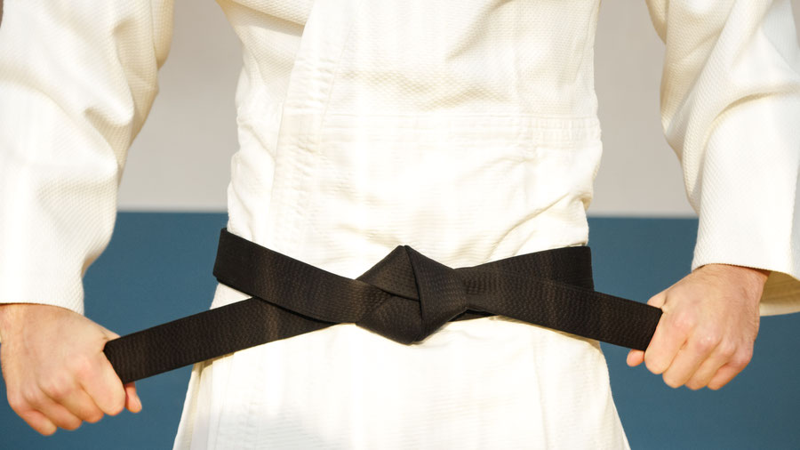
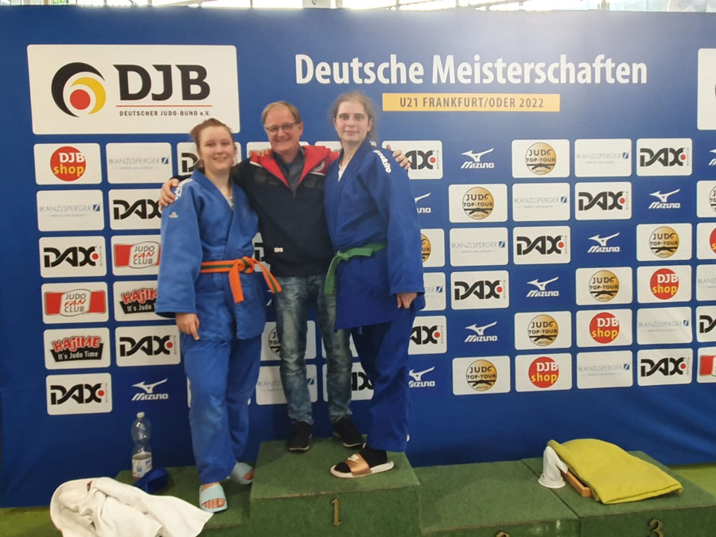

Kreis-Ranglistenturnier
Beim Ranglistenturnier des Kreisfachverbands in Barnstorf starteten acht Judoka unseres Teams in U9, U11 und U15. Sie holten sechs Gold- und zwei Silbermedaillen.
News
Berichte des Judo-Teams Bruchhausen-Vilsen aus den Jahren 2022 und 2023.
Beim Ranglistenturnier des Kreisfachverbands in Barnstorf starteten acht Judoka unseres Teams in U9, U11 und U15. Sie holten sechs Gold- und zwei Silbermedaillen.

Bei einem Turnier mit rund 250 Kindern erkämpfte das Team eine Gold-, zwei Silber- und drei Bronzemedaillen.

Unsere Kinder starteten beim Newcomer Cup in Bremen in den Altersklassen U9, U11 und U13. Für alle war es das erste Turnier. Sie holten zwei Gold-, zwei Silber- und vier Bronzemedaillen.

Beim International Elephant Cup in Schleswig-Holstein gewann Janine Schmitz Gold. Im Finale besiegte sie die Drittplatzierte der Deutschen Meisterschaft.

Als Landesmeisterin vertrat Janine Schmitz Bremen bei den Norddeutschen Meisterschaften und gewann Bronze. Bei den Deutschen Meisterschaften belegte sie den siebten Platz.